This project aims to optimize a car hood to improve structural performance and reduce weight, which is critical for a sports car. Through topography, specification, and topology optimization, we will increase stiffness, minimize mass, and verify the manufacturing feasibility of the hood. Each optimization step (benchmarking, structural reinforcement, thickness adjustment, and material removal) ensures an efficient, manufacturable design that withstands aerodynamic forces while improving vehicle performance. The end result will be a lightweight, high-performance hood.
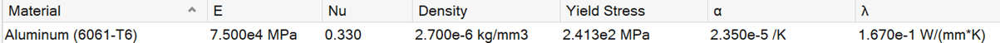
Figure 1. Material Details
The design of a car hood must consider aerodynamic pressures experienced during driving, where dynamic pressure increases with the square of the vehicle's speed, though it remains relatively low (far below 1 MPa) under normal conditions.
The dynamic pressure exerted on the hood can be calculated using the formula:
q=1/2⋅ρ⋅v2
At 200 km/h (approximately 55.56 m/s):
q=1/2⋅1.225⋅(55.56)2≈1,890.4 Pa
Beyond aerodynamics, the hood must withstand extreme wind conditions, acceleration and deceleration forces, impact from debris or animals, structural stresses from vehicle dynamics, thermal expansion due to engine heat, and comply with safety and regulatory standards such as pedestrian protection and crashworthiness. Therefore, we consider the pressure of the hood as 0.1Mpa, the design standards for a car hood should ensure structural integrity using high-strength, lightweight materials, incorporate safety features to absorb impact energy, optimize aerodynamic efficiency, and adhere to manufacturing quality while considering environmental sustainability. The four edges of hood are constrained, and the surface is subjected to 0.1Mpa of pressure.
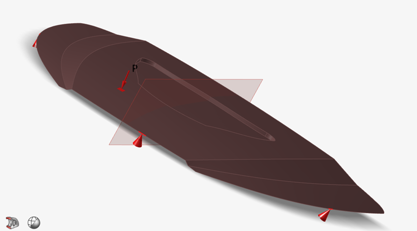
Figure 2. Model Details
The FE analysis is performed for the Linear Static and Normal Mode load cases to evaluate the performance of the existing design.
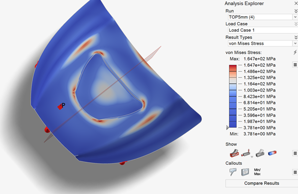�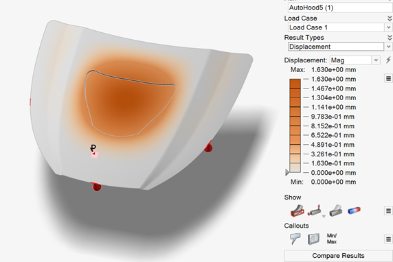�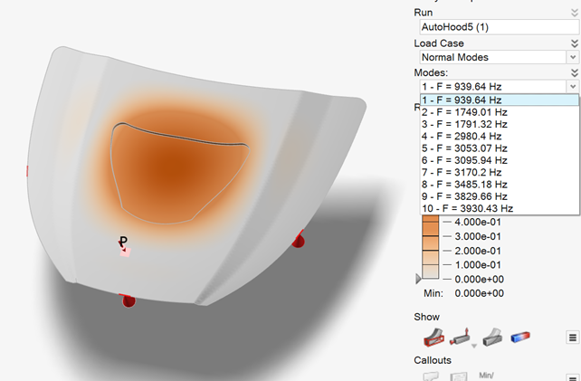
Figure 3. Existing Design Analysis
The existing design is meeting the performance targets (refer Table 1).
|
Details |
Max������� Stress (MPa) |
Max Displacement (mm) |
Normal������� Mode 1 (Hz) |
Mass (Kgs) |
|
Existing������ Design |
164.7 |
1.63 |
939.64 |
0.06 |
In this part we conduct topography optimization, adds beads and swages to improve the stiffness and frequencies for the hood designed. These structural features help the hood resist deformation caused by aerodynamic forces and improve its vibration resistance at high speeds.
The thickness of hood is 1mm, as mentioned before, we consider the entire part surface subject to 1Mpa uniformly. So we set the entire hood as design space, and set symmetric constrain in Z-axis.
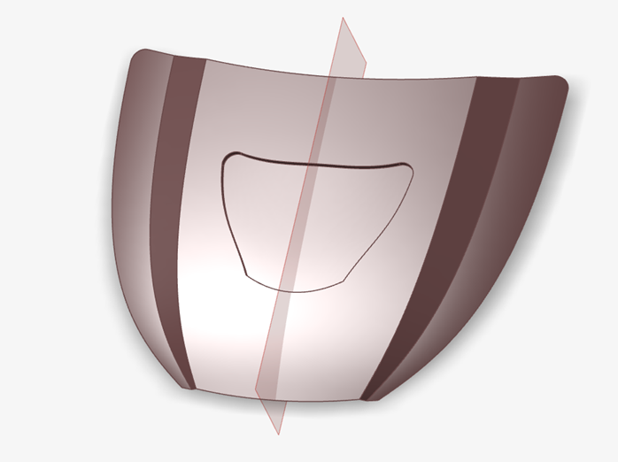
Figure 4. Topography Optimization set-up details
We run 3 concepts by varying the minimum bead width: 15 mm, 10 mm and 5mm,bead depth of 2.5 mm and draw angle of 75 degrees is maintained for all the 3 concepts. Optimization is performed with �Maximize Stiffness� as the objective with Maximize Frequencies as a constraint. The concepts generated can be seen below (Figure 5).
�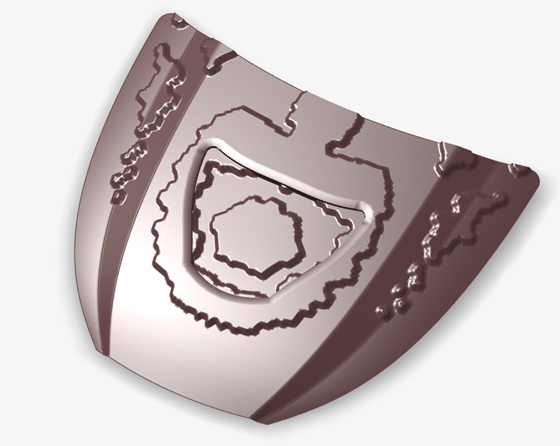�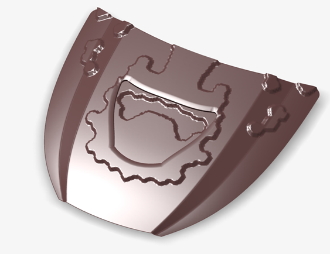
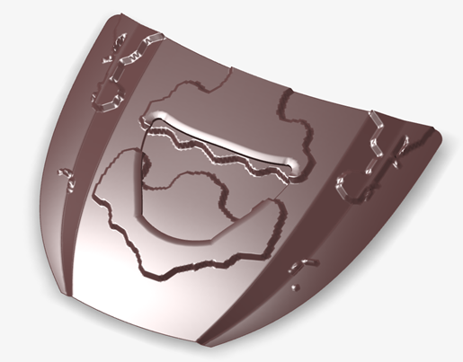
Figure 5. Topography Optimization Concepts
Conduct analyzes of 3 optimized parts, the performances are shown below. The concept with bead width of 5mm works best for the results.
|
Details |
Max������� Stress (MPa) |
Max Displacement (mm) |
Mass (Kgs) |
|
Topography 2.5 deep 5mm bead width |
192.2 |
0.414 |
0.06 |
|
Topography 2.5 deep 10mm bead width |
167.6 |
0.466 |
0.06 |
|
Topography 2.5 deep 15mm bead width |
177 |
0.531 |
0.06 |
Table 2. Performance of concepts generated
PolyNURBs are used to convert the optimized topography into a smooth, manufacturable shape. We use the best concept mentioned above to conduct PolyNURBs. This step reshapes the bead-reinforced design into a continuous form suitable for production, ensuring structural improvements are retained. By tracing the optimized contours, we create a realistic hood design that balances performance and manufacturability, ready for the next optimization stages.
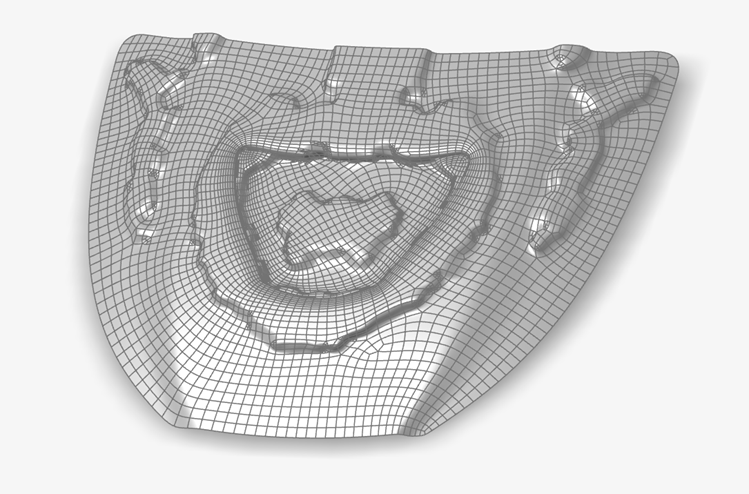
Figure 6. PolyNURB Interpretation
Gauge optimization reduces the hood�s weight by adjusting material thickness in non-critical areas, maintaining strength and stability. The current thickness is 1mm. With �minimize mass�, minimum frequency constraint of 800 Hz and a Safety Factor of 1.2 as the goal, we refine thickness distribution while ensuring required stiffness and safety standards, achieving a lighter yet robust design.
The optimizer runs through iterations and comes up with a reduced thickness of 0.878 mm, while meeting all the constraints. The mass of the component is also reduced from 0.063 Kgs to 0.055 Kgs, which is 12.7%
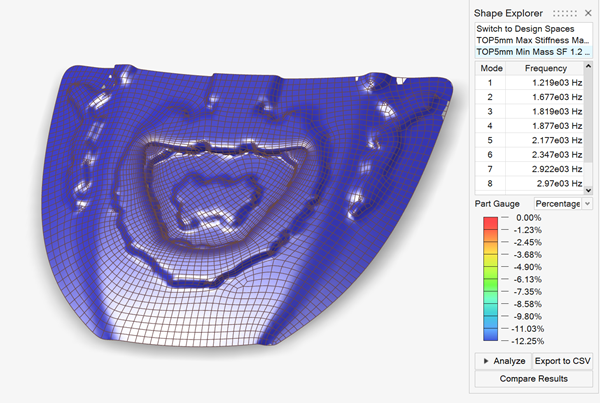
Figure 7. Gauge Optimization
Topology optimization optimizes material distribution by creating openings or pockets in low stress areas of the hood, further reducing weight while maintaining structural integrity.
The goal is to achieve optimal load paths by removing unnecessary material, thereby reducing weight without compromising strength or stiffness.
Duo to the uniformly arrange of pressure on the surface of the hood, we conduct topology optimization to the entire hood, define non-critical areas as the design space and set material volume constraints, typically retaining around 60% of the original material. Using "maximize stiffness" as the goal, optimization determines areas where material needs to be removed and proposes the ideal configuration with holes or pockets to achieve a lightweight design. In result, the weight has been reduced from 0.055kgs to 0.051kgs, which is more than 7%.
Topology optimization maximizes material efficiency, creating a structurally sound but lighter hood. This step is key to achieving the overall weight reduction goals while ensuring the hood can withstand aerodynamic and structural loads.
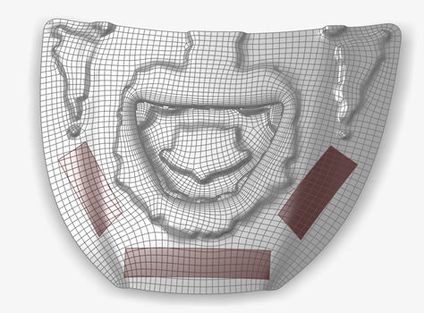�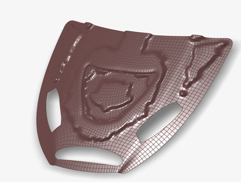
Figure 8. Topology Optimization
Although we have conducted topology optimization and reduced weight somehow, the auto hood needs to be entirely closed part to protect auto parts inside. So we still use the model in previous step as our final optimized design.
Final design validation confirms that the optimized hood meets the required performance benchmarks for stress, displacement, and frequency. This step ensures that all optimizations collectively achieve the desired strength and stability.
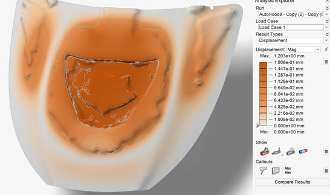�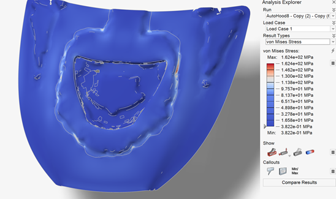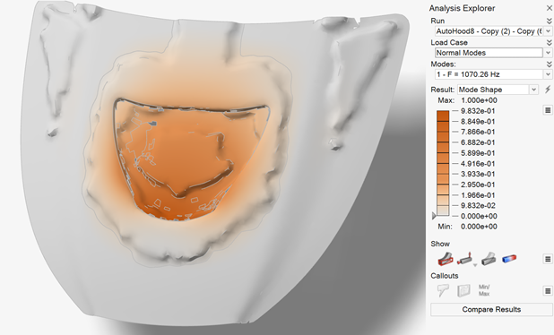
Figure 9. Final Design Validation
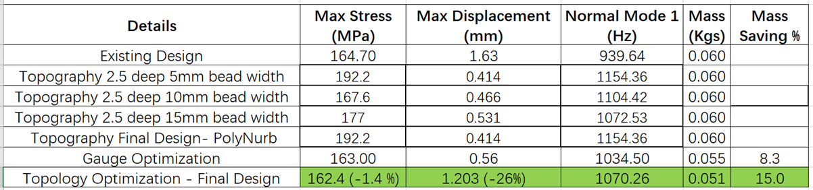
Table 3. Results comparison
The final topology-optimized design achieves a 15% mass reduction, lowering the mass to 0.051 kg while slightly reducing max stress to 162.4 MPa (-1.4%) and decreasing max displacement by 26% to 1.203 mm. The stress seems not changed sightly, which is because the part have poor mesh geometry and the stress are concentrated at some points, while the most of other areas still have a significant reduction of average stress. It also maintains a high natural frequency at 1070.26 Hz, indicating that the design meets performance standards with enhanced weight efficiency and structural stability.
Manufacturing feasibility analysis checks whether the optimized hood design can be produced without defects during the forming process, such as thinning, wrinkling, or over-stretching. Ensures that the optimized design is manufacturable and has no defects that could affect its quality or performance.
The red areas indicate a high degree of thinning. This is due to meshing issues caused by poor model geometry, but we can see that except for the geometry problem points, all parts are below 20%. Formability: Red indicates areas at risk of failure, and blue indicates safe areas. It can be seen that there are almost no red parts in the picture. Thickness distribution: Shows the material thickness of the entire hood, from thinner areas to thicker areas. The part thickness balance is good in the picture.
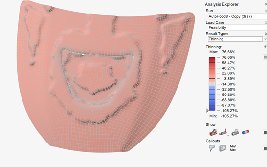�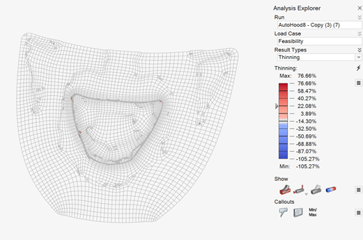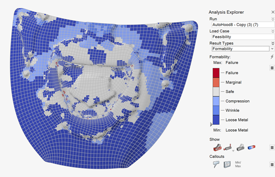�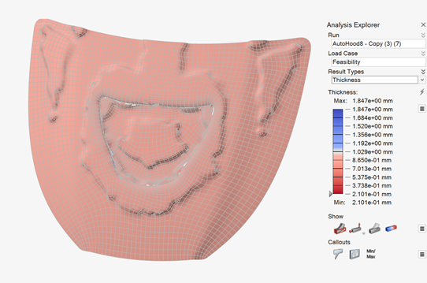
Figure 10. Manufacturing Feasibility Analysis Results